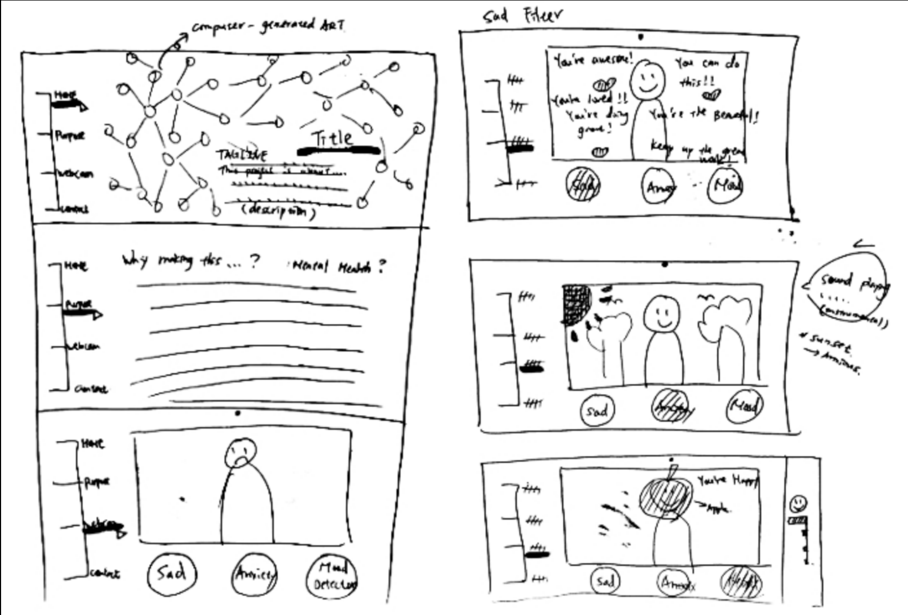

INTRODUCTION
Many people believe communicating through technology will result in lacking in human affection and emotional interaction. I decided to challenge that idea and create a web-based human-machine interaction platform that helps emotions exchange through interacting with a computer. I want to make people believe that technology can also be used in an emotional way.
Mooder is an art installation and a web-based creative filters platform that is used to provide emotional support and helps people feel better about themselves. It serves as an entertaining filters platform and helps people deal with stress or negative emotions. Mooder was tested on users and developed based upon their feedback.
During the development, I did a series of questionnaire asking users how they usually respond to negative emotions and what they want from the computer when they are experiencing negative emotions.
PROJECT DEVELOPMENT (Features Consideration)

HOW TO USE IT?
Each button represents different filter features. Down below is the instruction of how to use these filters.
FILTER FEATURES
MOOD Filter
Indicate happy, sad, or angery based on your current facial expression.
SAD Filter
Many people mention that the encouragement from others can make them feel better when they are feeling sad. For this reason, I created the sad filter to encourage people and cheer them up whenever they are feeling down.
ANXIOUS Filter
I create this filter to help people deal with stress, anxiety, and negative emotions. I made this breathing ball animation to help them cool down when their temper flares and sharpen their concentration skills. This filter can be utilized as a helper for breathing meditation or as many other meditative implements.
Designer | Artist | Developer:
ELLE LUO
Advisor:
GLENDA DREW